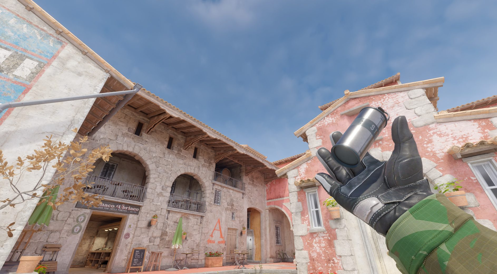
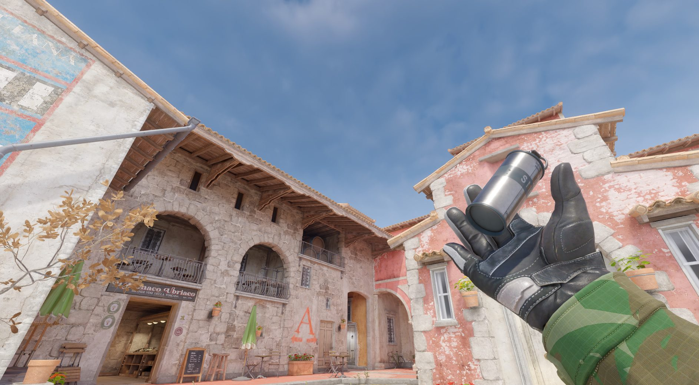

🎯 Taktikai Tipp #1
Mindig használj fülhallgatót, hogy jobban halld az ellenfeleket.
💣 Taktikai Tipp #2
Tanuld meg a smoke gránát dobásokat különböző pályákon!
💣 Taktikai Tipp #3
gyüjts jobb fegyverekre a 2. körben

Mindig használj fülhallgatót, hogy jobban halld az ellenfeleket.
Tanuld meg a smoke gránát dobásokat különböző pályákon!
gyüjts jobb fegyverekre a 2. körben